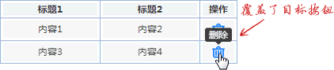
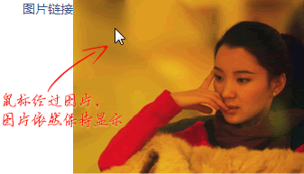
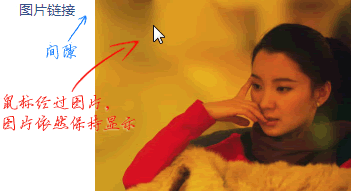
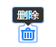

首页 > 编程笔记
CSS :hover伪类选择器用法详解
:hover 是各大浏览器最早支持的伪类之一，最早只能用在 <a> 元素上，其设计的初衷是改变链接元素的颜色：
例如：
实际上，判断一个设备是否适合使用 :hover 伪类，不是看设备尺寸，也不是看设备类型，而是看设备是否连接了鼠标，因为触屏设备也可能连接鼠标，而桌面端网页也可能在触屏设备下访问。
因此，我的建议是，:hover 伪类最好在支持 hover 交互的场景下使用，我们可以使用对应的媒体查询语句实现，例如：
CSS :hover 触发是即时的，于是，当用户操作鼠标在页面上经过的时候，会出现浮层覆盖目标元素的情况，如下图所示，本来目标是上面的删除按钮，结果鼠标光标经过下面的删除图标的时候，浮层把上面的按钮覆盖了。
可以通过增加延时来优化这种体验，方法是使用 visibility 属性实现元素的显隐，然后借助 CSS transition 设置延时显示即可。
例如：
然而，上面的实现有一个缺陷，那就是如果浮层图片和触发 hover 的链接元素中间有间隙，则会导致鼠标光标尚未移动到图片时图片就隐藏起来，从而无法持续显示。这个问题也是有办法解决的，那就是借助 CSS transition 增加延时。
由于 transition 属性对 display 无过渡效果，而对 visibility 有过渡效果，因此，图片默认隐藏需要改成 visibility:hidden，CSS 代码如下：
:hover 交互在有鼠标的时候确实很方便，但是如果用户的鼠标坏了，或者设备本身没有鼠标（如触屏设备、智能电视），则纯 :hover 实现的下拉列表功能会完全失效，根本无法使用，这是会使用户抓狂的非常糟糕的体验。
对于带有交互的行为，一定不能只使用 :hover 伪类，而需要额外的处理。
对于文章开头提到的删除按钮的提示信息，我们可以通过增加 :focus 伪类来优化体验，如下：
但是，对于本身就带有链接或按钮的浮层元素，使用 :focus 伪类是不可行的，因为虽然可以触发浮层的显示，但是浮层内部的链接和按钮无法被点击，这是由于通过键盘切换焦点元素时浮层会因失焦而迅速隐藏。不过这是有其他解决方法的，那就是使用整体焦点伪类:focus-within。
目前 IE 浏览器并不支持 :focus-within，那么对于需要兼容 IE 浏览器的项目又该怎么处理呢？我的建议是忽略，因为使用 IE 浏览器且又无法使用鼠标操作的场景非常少见。因此，我们只使用 :focus-within 来增强键盘访问体验即可。
当然，如果你的产品面向的用户体量很大，要想实现精益求精，在 IE 浏览器下使用键盘访问也能完美无误，则免不了使用 JavaScript 代码额外实现点击交互了。总而言之，如果悬停交互显示的内容非常重要，一定要额外用点击交互兜底，以确保 :hover 伪类在无法触发时这部分内容也能正常显示。
a { color: blue; }
a:hover { color: darkblue; }
由于 :hover 实现浮层元素的显示与隐藏效果非常方便，于是当时出现了很怪异的现象：<a> 元素满天飞，甚至 <a> 元素里面嵌套 <div> 元素以实现悬停交互效果，完全不符合 HTML 元素原本语义。例如：
<a href="javascript:void(0)">
菜单
<div class="list">列表</div>
<a>
list { display: none; position:absolute; }
a:hover .list { display: block; }
CSS 所有新特性的出现都源自用户需求和开发需求。同样，当意识到仅 <a> 元素支持 :hover 伪类非常影响开发效率之后，浏览器迅速跟进升级。目前，所有主流浏览器中，:hover 伪类已经可以在任意 HTML 元素中使用了，其中包括自定义元素：
x-element:hover {}
需要注意的是，如果是移动端开发，强烈建议不要使用 :hover 伪类实现交互效果，因为对于手机和 iPad 这类移动设备，常见的交互操作都通过触屏，而不是鼠标。虽然在这些设备上，:hover 也能触发，但消失并不敏捷，体验反而不佳。实际上，判断一个设备是否适合使用 :hover 伪类，不是看设备尺寸，也不是看设备类型，而是看设备是否连接了鼠标，因为触屏设备也可能连接鼠标，而桌面端网页也可能在触屏设备下访问。
因此，我的建议是，:hover 伪类最好在支持 hover 交互的场景下使用，我们可以使用对应的媒体查询语句实现，例如：
@media (hover: hover) {
.list { display: none; }
.box:hover .list { display: block; }
}
然而，在 hover 交互中，元素单纯的 display 显隐变化有时候并不是最佳实现，其中有不少可以优化的地方。体验优化与:hover延时
用 :hover 实现一些浮层类效果并不难，但是很多人在实现的时候没有注意到可以通过增加 :hover 延时来增强交互体验。CSS :hover 触发是即时的，于是，当用户操作鼠标在页面上经过的时候，会出现浮层覆盖目标元素的情况，如下图所示，本来目标是上面的删除按钮，结果鼠标光标经过下面的删除图标的时候，浮层把上面的按钮覆盖了。

图 1 hover浮层覆盖目标元素的体验问题
图 1 hover浮层覆盖目标元素的体验问题
可以通过增加延时来优化这种体验，方法是使用 visibility 属性实现元素的显隐，然后借助 CSS transition 设置延时显示即可。
例如：
.icon-delete::before,
.icon-delete::after {
transition: visibility 0s .2s;
visibility: hidden;
}
.icon-delete:hover::before,
.icon-delete:hover::after {
visibility: visible;
}
此时，当鼠标光标经过下面的删除按钮的时候，浮层不会立即显示，也就不会发生误触碰导致浮层覆盖的体验问题了。非子元素的:hover显示
当借助 :hover 伪类实现下拉列表效果的时候，相信很多人都是通过父子选择器控制的。例如：
.datalist {
display: none;
}
.datalist-x:hover .datalist {
display: block;
}
然而实际开发中有时候不方便嵌套标签，此时，我们可以借助相邻兄弟选择符实现类似的效果。举个简单的例子，实现鼠标经过链接时预览图片的交互效果。<a href>图片链接</a> <img src="1.jpg">我们的目标是鼠标经过链接的时候图片一直保持显示，CSS 代码其实很简单：
img {
display: none;
position: absolute;
}
a:hover + img,
img:hover {
/*鼠标经过链接或鼠标经过图片时，图片自身都保持显示 */
display: inline;
}
上述内容一目了然，就不多解释了，主流浏览器都兼容这个伪类，可以放心使用。最终效果如下图所示。

图 2 hover链接显示兄弟图片元素
图 2 hover链接显示兄弟图片元素
然而，上面的实现有一个缺陷，那就是如果浮层图片和触发 hover 的链接元素中间有间隙，则会导致鼠标光标尚未移动到图片时图片就隐藏起来，从而无法持续显示。这个问题也是有办法解决的，那就是借助 CSS transition 增加延时。
由于 transition 属性对 display 无过渡效果，而对 visibility 有过渡效果，因此，图片默认隐藏需要改成 visibility:hidden，CSS 代码如下：
img {
/* 拉开间隙，测试用 */
margin-left: 20px;
/* 使用visibility隐藏 */
position: absolute;
visibility: hidden;
/* 设置延时 */
transition: visibility .2s;
}
a:hover + img,
img:hover {
visibility: visible;
}
最终效果如下图所示。

图 3 hover链接显示有间隙的兄弟图片元素
图 3 hover链接显示有间隙的兄弟图片元素
纯:hover显示浮层的体验问题
纯 :hover 显示浮层的体验问题是很多开发人员未曾意识到的。例如，某开发人员使用 :hover 伪类实现一个下拉列表功能，利用纯 CSS 实现，殊不知已经埋下了巨大的隐患。:hover 交互在有鼠标的时候确实很方便，但是如果用户的鼠标坏了，或者设备本身没有鼠标（如触屏设备、智能电视），则纯 :hover 实现的下拉列表功能会完全失效，根本无法使用，这是会使用户抓狂的非常糟糕的体验。
对于带有交互的行为，一定不能只使用 :hover 伪类，而需要额外的处理。
对于文章开头提到的删除按钮的提示信息，我们可以通过增加 :focus 伪类来优化体验，如下：
.icon-delete::before,
.icon-delete::after {
transition: visibility 0s .2s;
visibility: hidden;
}
.icon-delete:hover::before,
.icon-delete:hover::after {
visibility: visible;
}
/* 提升用户体验 */
.icon-delete:focus::before,
.icon-delete:focus::after {
visibility: visible;
transition: none;
}
此时，使用键盘上的 Tab 键聚焦删除按钮，可以看到提示信息依然出现了，如下图所示。如果不加 :focus 伪类，则用户无法感知提示信息。

图 4 focus按钮显示提示信息
图 4 focus按钮显示提示信息
但是，对于本身就带有链接或按钮的浮层元素，使用 :focus 伪类是不可行的，因为虽然可以触发浮层的显示，但是浮层内部的链接和按钮无法被点击，这是由于通过键盘切换焦点元素时浮层会因失焦而迅速隐藏。不过这是有其他解决方法的，那就是使用整体焦点伪类:focus-within。
目前 IE 浏览器并不支持 :focus-within，那么对于需要兼容 IE 浏览器的项目又该怎么处理呢？我的建议是忽略，因为使用 IE 浏览器且又无法使用鼠标操作的场景非常少见。因此，我们只使用 :focus-within 来增强键盘访问体验即可。
当然，如果你的产品面向的用户体量很大，要想实现精益求精，在 IE 浏览器下使用键盘访问也能完美无误，则免不了使用 JavaScript 代码额外实现点击交互了。总而言之，如果悬停交互显示的内容非常重要，一定要额外用点击交互兜底，以确保 :hover 伪类在无法触发时这部分内容也能正常显示。
关注公众号「站长严长生」，在手机上阅读所有教程，随时随地都能学习。内含一款搜索神器，免费下载全网书籍和视频。

微信扫码关注公众号